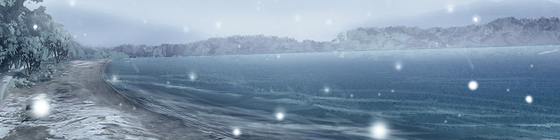

我喜欢看地图··· 看不到尽头的一号公路，陌生的土地。 我喜欢那些能够把我带到远方去的车辆。 但是，无论我积累了多少资讯··· 这些依然只是假想。 「真实感」与「内心」越来越脆弱。 我有泳装，也有地图。 但是，我却没有未来。 世界的的确确就存在于窗外。 尽管闭上双眼，我就能置身于虚构的世界中。 但是，这并不意味着身边的世界会就此消失。 我心里很清楚这一切。 我明白，空想中的世界将伴随着自己度过终生。 不断地罗列着自己的幻想，但到头来··· 它们都只不过是憧憬而已， 无论是比基尼泳装，还是翡翠色的大海··· ···心口上那条长长的伤痕，时刻告诫着我放弃这些念头。 但是··· 我在医院中走过了大半的人生， 在空想的世界里度过了大半的人生··· 最终也只能从7楼和自己的家中选择其一， 这让我感觉到无穷无尽的悲哀。 没有人给我选择的余地··· 但是， 我却又无法为自己选择去处。 ···即使这样，我也已经活了22年··· 为什么···就不能让我自由地选择一次呢··· 在低声呐喊的瞬间，我感到冰冻的时间似乎在颤动。 在早已冰冻的内心中，我感到了一丝痛苦···
1月26日 一号公路 平冢银色的酷派在冬日晴朗的天空下奔驰着。 尽管我们依然没有目的地， 但至少暂时不必为汽油和食物担心了。 前方是一处十字路口。 尽管昨晚她并没有赞同我的决定， 但我还是凭着感觉尽量向西行进。 只是，我完全不熟悉周围的地理， 仅靠手中的钱，又实在是交不起高速公路的路费。 这时，车子已经驶到了十字路口。 正当我毫无顾忌地打算向前开的时候··· 「向左拐···」 「诶？」 「从这里向左拐」 她忽然向我发出了指示。 尽管有些莫名其妙， 但我还是按照她的指示，将车开上了通往左侧的大道。 「你怎么了？」 「········」 「这是一号公路···暂时直行下去就可以了···」 「啊···？」 我对她突如其来的指示感到很惊讶。 在至今为止的共同行动中， 我的确感到她的知识很丰富， 但像这样主动地向我发出指示，还是头一次。 「···莫非你想去了吗？」 「······」 「啊，我是说···你想到那个淡路岛去了吗？」 「不可以吗？」 「啊，我倒不是这个意思···」 我们毫无目标地前进着。 我为了寻求目标而徘徊着， 她则总是注视着远方，让我猜不透她的心思。 所以，她的话使我感到非常意外。 「···我并没有期待那些」 「诶？」 「我并没有期待什么泳装···」 「你在说什么啊？」 「·······」 「···没什么」1月27日 22号公路 名古屋冬日的晴空下，银色的酷派反射着阳光。 离开了四处是陡坡与急转弯的箱根后， 现在的路况已经变得十分平坦了。 「这里是什么地方啊？」 「是爱知县，很快就会进入名古屋市区了···」 考虑到金钱的问题，我们没有使用高速公路。 如果只凭我一个人的话，肯定会辨不清东南西北的。 但现在，有她为我指路。 她的指示可能比导航系统更精确。 尽管我不知道她为什么会了解这些， 但我相信她所指的路是正确的。 「从下一个路口···进入22号公路」 「明白了」 我按照她的指示改变车道，扭转了方向盘。 景色在窗外流动着。 在陌生的市区中，我们径直向北驶去。 就这样，在不知不觉中， 喧闹的景色渐渐宁静了下来··· 「咱们到那里去吃点东西吧？」 国道的一侧有一家餐厅。 我一边开车，一边指着那里说道。 「你看，也不必总是吃便利店的东西吧？」 我当然不太喜欢便利店的食物。 但考虑到财政问题， 那个时候也没有别的选择了。 但现在，我们的手里多少有了点钱。 所以我这样提议道。 「就去吃一次饭店的东西吧」 「···我吃便利店的东西就行了···」 说着，她微微地低下了头。 似乎是在注视着自己的衣服。 啊···我这才想起来， 她身上还穿着那套宽大的衣服··· 「好吧，那咱们就先到那里去吧」 「···那里？」 「就在那边，有一家洋装店」 那是一家在国道边随处可见的， 贩卖牛仔服和休闲装一类衣物的量贩店。 「像这种店里的衣服，一般都不会太贵的」 「······」 「那咱们就过去吧？ 就这么说定了」 「·······」 她没有回答。 但也没有反对。 或许··· 对于她的回答， 只要不是反对，就可以当作是赞成来看待吧。 我们走进了店里。 她好奇地在两层楼的店里来回走动着。 尽管依然是默不作声， 与平时似乎没有什么不同。 但是，与看着无聊电视节目的时候相比， 从她身上可以感到一种略微不同的气息。 她一次次地拿起各种服装， 一次次地查看着标价牌。 每一次试穿后，都会跑到我的身边来··· 「···怎么样？」 「很合身的嘛」 「·······」 「···看上去不奇怪吗？」 「嗯，感觉挺好的」 每次试穿后， 我们都会重复一次这样的对话。 尽管她没有笑，也绝对不会将心情显露在脸上， 但看得出来，她一定是很兴奋的。 「怎么样，决定了吗？」 「嗯，我要买这一套」 说着， 她向我展示了一下最后试穿的那套可爱的上衣和裙子。 看上去就好像是初中生或高中生们喜欢的服饰。 记得她以前说过自己的年龄要比我大··· 但无论怎么看，这身衣服都似乎是为她量身定做的， 这让我不由得感到有些好笑。 「不过，我觉得裙子还是算了吧」 「诶···？」 「啊，倒并不是说不合适」 「·······」 「现在天气很冷吧？ 恐怕不适合穿这身衣服啊」 「···没、没事的···我忍得住」 她开口的那一刻··· 尽管平时绝不会将心情显露在表情上， 但现在，她的脸却似乎有些红润了··· ···或许，她感到害羞了吧。 我第一次见到了她这样的表情。 我们继续驱车飞驰着。 在冬日晴空下， 酷派带着扰人的排气声奔跑着。 「从下一个路口进入21号公路···」 「明白了」 我依然在她的指示下驾驶着汽车。 不知不觉间，我们已经来到了岐阜县。 往常，她总是会静静地注视着窗外。 但今天， 她却一次又一次，高兴地注视着自己映射在反光镜中的身影。 时而也会偷偷地观察我的目光。 「·······」 「···怎么了？」 「没什么，你看上去好像很喜欢这身衣服啊」 「·······」 「不···没有的事啦」 说完，她将视线从反光镜上移开了。 但没过多久， 她便再次开始偷偷地照起了镜子。 原来，她也有可爱的一面啊 尽管是微不足道的小事， 但依然使我感受到了她的可爱。 当太阳落山的时候。 在路边。 我们今天依然吃着从便利店买来的食物。 「你觉得医院那边现在会是怎样一副情景呢···」 白色的塑料手环仍旧卷在我的手腕上。 我看着这记载了姓名和血型的医院标识说道。 「是不是已经闹翻天了呢？」 「大概吧」 「是啊···」 父母、朋友、以及医院的医生们··· 尽管他们只会出于义务而为我担心， 但我还是感到有些过意不去。 抱歉了···父亲和其他的各位··· 都怪我太任性了··· 「你···」 「嗯？ 什么事？」 「第一次···听说自己会死的时候···你哭了吗？」 「·····」 她的提问使我觉得有些惊讶。 面对这沉重的问题，我细细地思索了一下。 「···记得···我没有哭」 「那么···你是否诅咒过对自己如此不公的命运呢？」 「这个···我记不清了」 开始时，我并没有体会到这件事的真实感。 因此，那时我也无法去将它当作真实的事情来思考。 不过···或许我多多少少诅咒过自己的命运吧。 一起去过驾校的朋友买了新车， 还得意地炫耀着36次的分期付款是多么得不易。 朋友中，有的人找到了工作，有的人不得不留级。 有的人有了孩子。有的人被女朋友甩掉了。 而我···却失去了未来。 所以··· 我想我的确埋怨过命运对自己的不公。 即使一次次地告诫自己这就是命运， 但心中却依然难以放弃一切。 「那么···你又怎么样呢？」 「···我？」 「嗯，你哭过吗？ 诅咒过自己的命运吗？」 「······」 「···我平静地接受了一切」 「···为什么？」 「因为我从一开始，就从没有抱过任何希望···」 「因为我放弃了一切」 「是吗···」 假如从一开始就放弃了希望，自然也不会有任何的失望。 消极的人生的却不会快乐，但同样也不会痛苦。 但是，我感到这种想法本身就非常得悲哀。 还是说，对她而言··· 已经没有其他的选择余地了吗··· 「从前看过的一部电影中说过···」 「狼只能活3年」 「啊？ 狼？」 她忽然开口说起了莫名其妙的话。 「但是···驴却可以活9年」 「你在说什么啊？···什么狼啊驴啊的？」 「听说···驴之所以活得更久」 「是因为人们需要它···」 她凝视着窗外，静静地说道。 这就是她··· 为了让自己接受一切，为了让自己放弃一切··· 而编织出来的理由吗··· 寒冬的天空渐渐昏暗下来。 我们在21号公路上行驶着。 白色的结晶，星星点点地飘舞在昏暗的天空中。 片刻后，便化作了纷纷扬扬的雪花。 「···怎么了？」 「啊，开始下雪了···」 很快， 道路的两边已经积起了一层白雪。 不知不觉间，我们进入了积雪地带。 四周都被染成了一片银白。 或许有些不妙。 刚才检查了一下， 这辆车的轮胎似乎不是防滑式的。 万一前方的雪下得更大的话， 我们或许会遇到麻烦。 「这一带是多雪地带吗？」 「诶···？」 「万一前边的雪下得更大的话，会麻烦的」 「······」 即使路面没有积雪， 也很可能会有冰冻。 这样想来，或许应该按照驾校教材上的知识， 给轮胎装上防滑链才行。 「怎么样，你知道吗？」 「这前边···是关原」 「这个你刚才已经说过了， 我是想知道那里会经常下雪吗？」 「···不知道···」 不知为何，她有些悲哀地答道。 从她的声音中我似乎感到了一丝不安。 她对道路如此熟悉， 对这辆车更加熟悉··· 比起这些来，气候的事情应该更不在话下才对。 「明白了，我会小心一点的」 「···嗯」 岸边。 我们走出车子，眺望着湖面。 在强风的吹动下， 积雪渐渐地将漂着冰块的湖面染成白色。 她缓慢地向湖边走去。  我以前也曾目睹过这幅景象。 「···你认为会怎么样呢？」 「你是指假如这样走进去的话，能否轻松地死掉吗？」 「嗯，我想一定会比在大海里更轻松的···」 「你这根据是从哪里来的啊···」 「因为海水是咸的，身体就会浮起来了嘛···」 「···好高明的推理啊」 在冰冷的北风与白雪中， 我们进行着不知是认真还是玩笑的对话。 这时，她再次向着湖边迈出了脚步。 「···你还是不拉住我吗？」 「因为你今天还不打算死吧？」 「···嗯···或许吧」 ···距离那个淡路岛， 究竟还有多远的距离呢··· 尽管我并不是很想到那里去， 也并非是有什么事情想在哪里做。 但是漫无目的的徘徊中， 我们已拥有了属于自己的目的地。 尽管我没有拉住她， 她还是在靠近岸边一步的位置上停下了脚步。 ···我想，她一定也与我做着同样的考虑吧。1月27日 8号-1号 名神高速：岐阜濑田交流道「从这里返回一号公路···」 「明白了」 我们从8号公路转回了一号公路 我在她的指引下， 向草津驶去。 「现在还有多少钱？」 「哦，还剩下3万日元左右」 除了买衣服外， 我们都只是在便利店购买食物。 「怎么了？」 「···那么，开上高速公路吧」 「高速公路？ 只走普通公路的话去不了吗？」 「可以开到很近的地方···」 「但最后，肯定还是要驶上收费公路的···」 「是这样啊，毕竟是淡路岛嘛」 尽管不是很了解，但我还是知道， 前往淡路岛是必须通过濑户大桥等桥梁的。 「那么，就从草津进入匝道吧」 「明白了」 我按照她的指示， 经濑田交流道口进入了名神高速公路。 与普通公路相比，这里的路面要宽阔平坦得多。 尽管头一次在高速公路上驾驶， 但视野宽阔的路面使我感到十分的轻松。 只是在右侧的高速车道行驶时， 从后边飞速驶来的车辆会让我感到有些恐怖。 尽管最初不太明白车辆间互相亮起尾灯与转向灯的意义， 但习惯这些后，高速公路上的驾驶便越来越有趣了。 「那辆车好快啊···」 一辆车从后边呼啸而过。 悠闲行驶中的我们不由得对视了一眼。 在助手席上， 她也显得与往常有些不同。 平时，她总是静静地凝视着窗外的景色。 而今天，却好奇地注视着来来往往的车辆。 这时，我想起她对车的知识也很了解。 我指了指刚才那辆飞速驶过的车。 「刚才那辆是什么车啊？」 「······」 「说说看，就当作是猜谜游戏好了」 「···丰田赛利卡、OVERVIEW」 「那刚才超过去的那辆呢？」 「雪铁龙、塞纳···」 「欸~，你懂得可真多啊」 说实话， 我并不知道她的答案是否正确。 但看到平时极少开口的她能够一个接一个地回答我的问题， 我感到非常高兴··· 所以，我也接二连三地问了下去。 「蓝色的是依诺斯，红色的是阿尔法·罗密欧」 她一口气回答出了两台飞驰而过的车辆的名字。 「不过，那一台你肯定不知道了吧」 说着，我指了指一辆卡车。 平时很少有机会见到她的表情， 因此，我想趁机看一看她为难的样子。 「···」 「果然换成卡车就答不出来了吧」 「···日产阿特拉斯10型」 「天啊，你可真厉害啊」 我本来想为难她一下， 没想到她居然会对卡车都如此了解。 「居然知道这么多，你完全可以引以为豪了」 「···是吗？」 「是啊，这可不是简单的事啊」 「······」 她没有回答我。 只是显得有些难为情。 她一定很喜欢车吧··· 「那么，到了淡路岛后，你也试着开一下车吧」 「诶···？」 「可是，我都没有驾照···」 「没事的,在海边开车一定会很有趣哦」 到了淡路岛以后， 一定会找到很多没人的地方吧。 而且这辆车是手动变速的， 习惯后一定会感到很有趣。 「到时候，我可以教你的」 「······」 「啊，不过我的驾车经验也少得可怜哪」 「···嗯」
第五章 一号公路